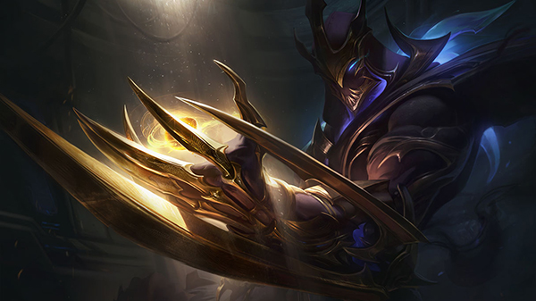
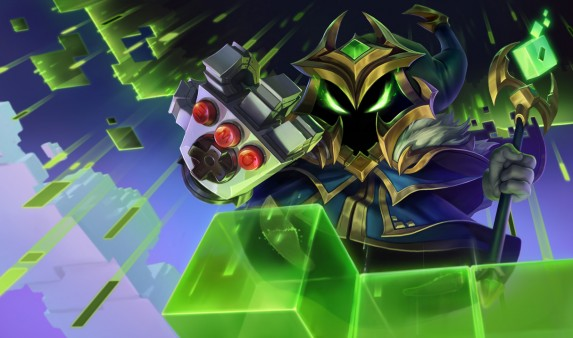

[Đấu Trường Chân Lý] Đánh giá chung về các tướng Hệ Pháp Sư
Mạnh thật nhưng mà mỏng
 Cơ Chế Hoạt Động |
Cơ Chế Hoạt Động |
 July 19, 2019 |
July 19, 2019 |
 Trung Anh Nguyen
Trung Anh Nguyen

Đã gần một tuần kể từ khiĐấu Trường Chân Lý cập bến Liên Minh Huyền Thoại và sức hút của nó chỉ có tăng thêm chứ chẳng giảm bớt đi chút nào. Cũng giống với “trình duyệt” của mình, Đấu Trường Chân Lý yêu cầu người chơi phải có hiểu biết nhất định về tướng, hệ, tộc và trang bị, những yếu tố cơ bản giúp bạn giành chiến thắng. À tất nhiên, quan trọng nhất vẫn là “nhân phẩm”.
Hôm nay Liên Minh 360 sẽ giới thiệu các bạn về các Hệ trong Đấu Trường Chân Lý. Khởi đầu là một trong những hệ mạnh nhất và có khả năng khiến đối thủ bốc hơi trong nháy mắt, Pháp Sư. Như tên, các tướng thuộc hệ này cực kỳ phụ thuộc vào kỹ năng nên cần phải có lối lên đồ hợp lý để luôn có năng lượng cao và tích năng lượng nhanh.
Một khi có đủ 3 hoặc 6 tướng pháp sư trong đội hình thì bạn sẽ nhận được một bùa lợi vô cùng mạnh mẽ, đó chính là tăng sức mạnh kỹ năng đặc biệt, tối đa lên tới 100%. Tưởng tượng cảnh Karthus cầu hồn hay con rồng lon Aurelion Sol khạc với cái bùa đó xem. Về mặt điểm yếu thì khỏi nói cũng biết rồi, đó chính là mỏng manh và cần có các anh “vai u thịt bắp” che trở.
Nhưng có thêm một cơ chế đặc biệt, đó chính là tướng nào thấp sao hơn thì sẽ bị “kết liễu” ngay lập tức. Nghe thì ngon đó nhưng muốn dùng chiêu cuối liên tục bạn cần phải có đủ ba trang bị bao gồm Ngọn Thương Shojin, Kiếm Súng Hextech và Cuồng Đao Guinsoo hoặc Đại Bác Liên Thanh. Trang bị với tướng đâu dễ góp…
Tóm lại: Veigar cần phải có ít nhất hai đồ và đạt ba sao để hiệu quả. Nếu không đạt được hai điều kiện này thì tốt nhất đừng ham hố

Có gì ném đá hay góp ý thì anh em hãy bình luận ở phía dưới nhé. Ngoài ra đừng quên ghé Liên Minh 360 mỗi ngày để cập nhật tin tức mới và bổ ích nhất liên quan tới Đấu Trường Chân Lý!